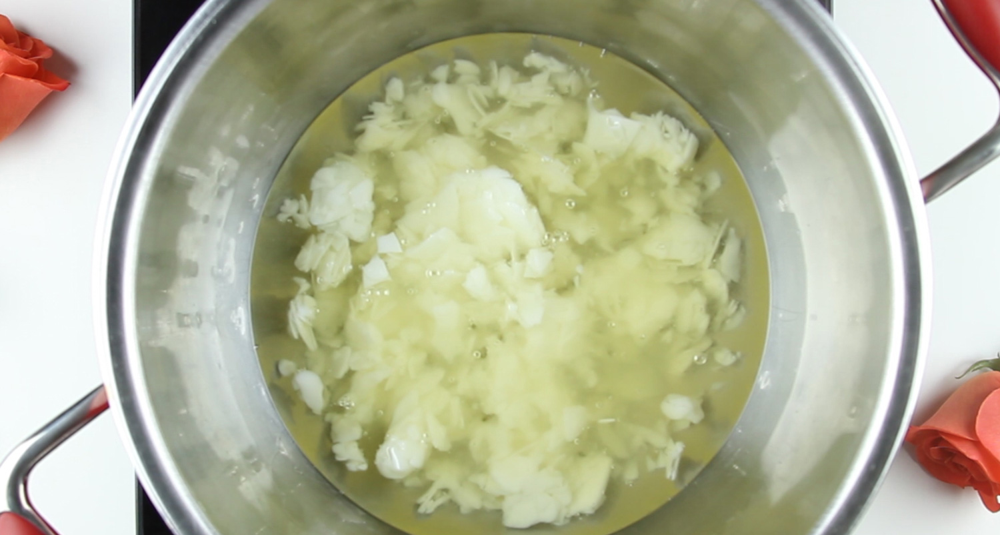
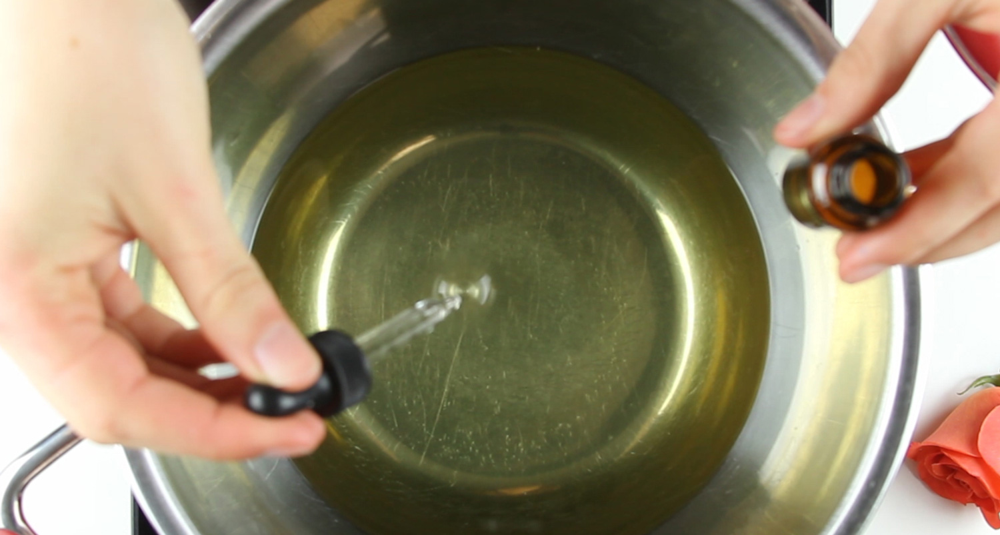
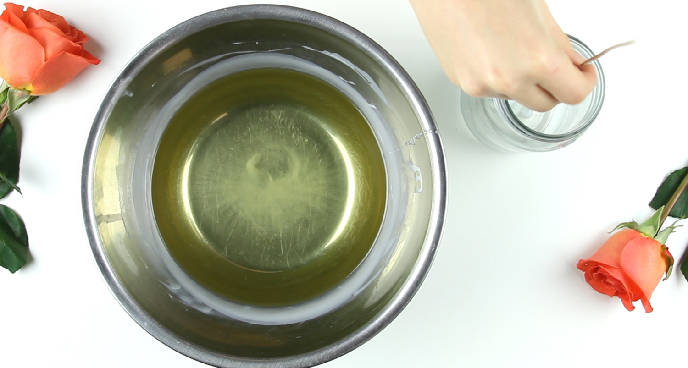
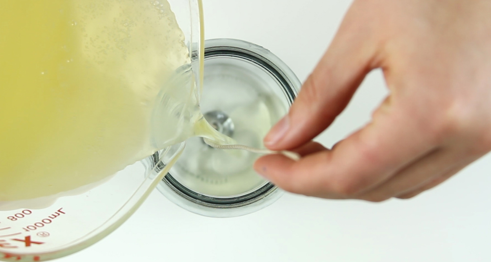
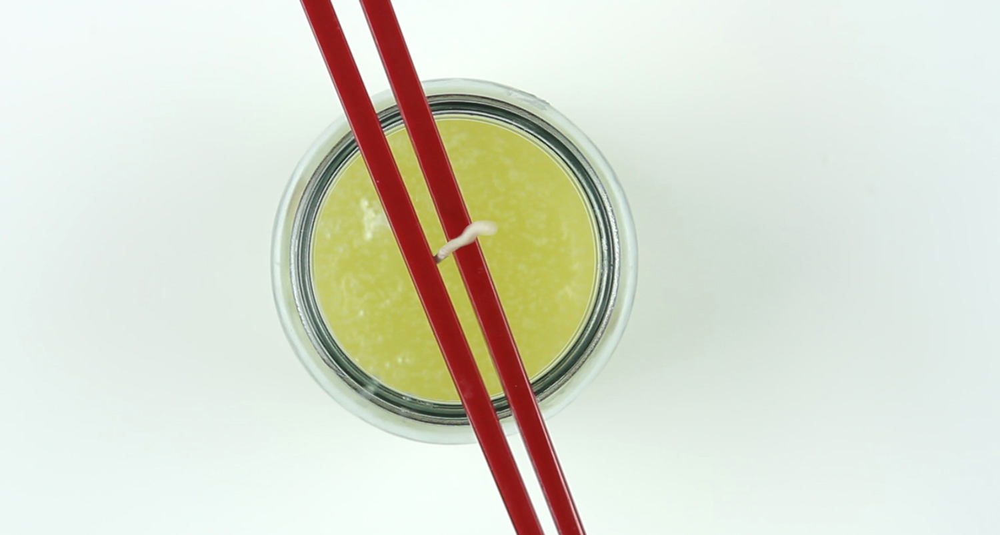
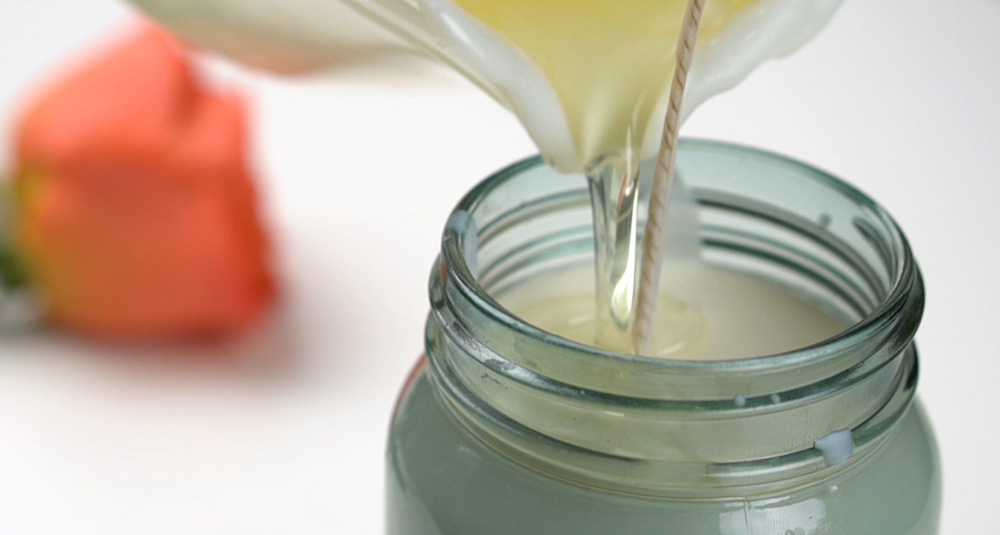
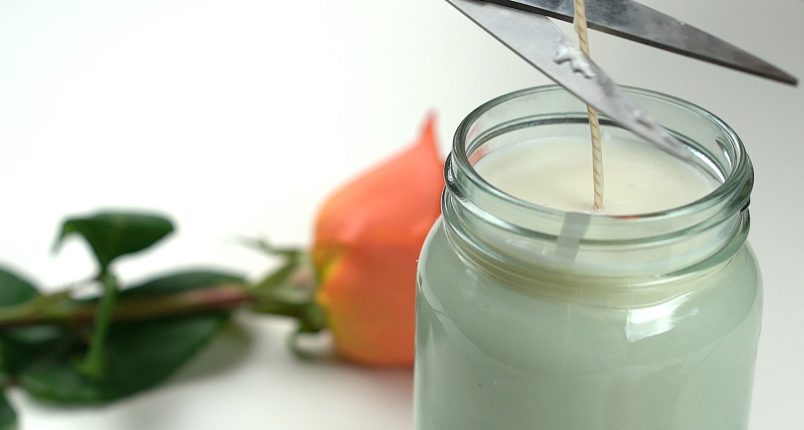

Before you begin the candle-making process, make sure you have a clean, flat surface to work on. You can also protect the area with newspaper or paper towels. Move anything that you don’t want to get wax on.
Measure out how much wax you would need to fill your container, then double it. That’s how much wax you will need to melt.
Step 2: Melt the wax
Pour the wax into your double boiler and allow to melt for 10 to 15 minutes, stirring frequently.

Step 3: Add fragrance oils
When your candle wax is melted, it’s time to add fragrance oils. Follow the instructions on your wax package for how much to add. Simply pour it into your melted wax and stir for a few seconds. While this step is optional, we definitely recommend it for a lovely floral smell.

Step 4: Attach the wick
The wick needs to be attached to the bottom of your container before you pour in the wax. You can attach the wick by dipping it in the melting wax then quickly sticking it to the bottom of the container. Let the wax sit five minutes to harden. Alternatively, you can superglue it.

Step 5: Pour the wax
Before you pour the wax into your container, let it cool for a few minutes. When the temperature on the thermometer reads 140 degrees, it’s time to pour.
Then, slowly pour the wax into your container. Hold the wick in place, but don’t pull on it. Leave a small amount of wax in the boiler for topping off your candle later.

Step 6: Secure the wick
To prevent your wick from swaying in the melty wax, you need to secure it in place. Lay two chopsticks across the top of the container. Sandwich the wick in between so that it stays centered while the wax hardens.
Allow the wax to set for four hours at room temperature.

Step 7: Add more wax
If your candle hardened with an unsightly top (think cracks or holes) simply reheat and add your remaining wax. Let harden.

Step 8: Cut the wick
Your candle wick should be less than half an inch long. If, when lit, the candle flickers or has a tall flame, trim the wick.

Audio
Live Video
Copyright
The author of this page does not own this material. It was used as material for a school project.